懒得解释了，反正之前没咋认真听过课（其实是去做数据库期末项目了）。今天终于有点时间了抽空看了一下之前的内容，做一下笔记记录一下免得以后忘了。学点东西顺便应付一下期末考试。
upd: (2024/1/14)：这门课满绩了，考试很简单，都是笔记里的东西。
数据库基础概念相关
数据(Data)、数据库(DB)、数据库系统(DBS)、数据库管理系统(DBMS)数据定义
- 数据是描述事物的符号记录。
- 数据库是指长期存储在计算机内的、有组织的、可共享的大量数据集合。
- 数据库系统是指在计算机系统中引入数据库后的系统构成，由数据库、数据库管理系统(及其开发工具)、应用系统、数据库管理员(和用户)构成。
- 数据库管理系统是位于用户(应用程序)与操作系统之间的一层数据库管理软件。
数据库系统的开发环节
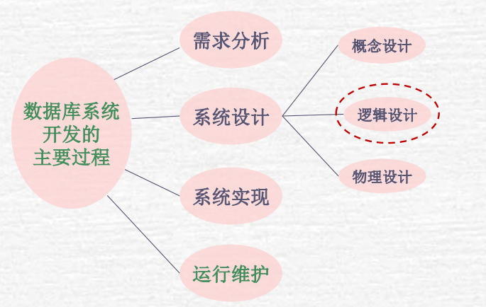
概念设计：通常使用实体-关系模型（ER模型）来表示数据和数据间的关系。
逻辑设计：通常是关系模型(还有层次/网状模型)，包括了表/列/数据类型、约束（如主键、外键）等。
物理设计：确定如何在物理存储层面上存储数据，包括文件组织、索引结构、数据分布、存储分配等。
数据管理的四个发展阶段：手工阶段、程序阶段、文件阶段、数据库阶段
数据库、数据库系统、数据库管理系统的功能
- DB：存储、检索、维护数据
- DBS：管理数据库以及环境、支持用户与数据库交互、控制数据库权限及安全
- DBMS：提供数据定义(DDL)、数据操作(DML)、数据控制(DCL)语言，同时维护数据库，确保数据库的完整性、性能优化和恢复管理
概念模型：是对现实世界的系统、概念或其他复杂对象的抽象表示。例如：层次模型(类似树)、网状模型(类似图)、关系模型(现在的数据库模型)、实体-联系模型(不是数据库模型，是一种用于数据库设计的高层次概念模型(ER图)
关系模型的完整性约束
- 实体完整性：确保每个表的主键是唯一的，且不允许为NULL。
- 参照完整性：如果表A中的某个字段是表B中主键的外键，则表A中所有的外键值必须在表B中有相对应的主键值，或者是NULL。
- 域完整性：数据列中的每个值都必须是定义的数据域中的有效值。
- 用户定义完整性：是针对特定业务规则定制的约束条件。
关系型数据库和非关系型数据库的主要区别是什么？并举出相应的软件产品
- 关系数据库是基于关系模型的，数据以表格的形式组织，表格中的行表示记录，列表示属性。常见关系型数据库有MySql、PostgreSQL、SQL Server等；非关系型数据库采用不同的数据组织方式，如文档存储、键值对存储或图形数据库。常见的非关系型数据库有MongoDB、Hbase等。
视图（Note：仅在少数简单视图上可以更新数据）
- 定义：是一种虚拟表，其内容由查询定义，但不在数据库中以存储数据的形式存在。
- 特点：
- 虚拟性：视图不存储数据，它是一个查询的结果集。
- 逻辑独立性：可以更改底层数据表的结构而不影响视图。
- 安全性：可以仅展示用户需要或允许看到的数据。
- 简化复杂查询：可以创建视图来简化用户的操作。
数据库范式相关
函数依赖、函数依赖集、依赖的推导
- 函数依赖(FD)。
假设在一张表中，任意挑俩元组i, j，若发现若\(A_i = A_j\)，则\(B_i = B_j\)，则说明属性A可推出B，写作\(A \rightarrow B\)，称为B依赖于A。
- 函数依赖集(FDs)。
就是一个集合，里头的元素是函数依赖。
- 依赖的推导
三个公理（要记住。这个其实感性理解很好理解）：
- 如果Y是X的子集，则\(X \rightarrow Y\)
- 如果\(X \rightarrow Y\)，则\(XZ \rightarrow YZ\)
- 如果\(X \rightarrow Y, Y \rightarrow Z\)，则\(X \rightarrow Z\)
两个定理
- 若\(X \rightarrow Y, X \rightarrow
Z\)，则\(X \rightarrow YZ\)
- 证明：因为\(X \rightarrow Y\)，所以\(XZ \rightarrow YZ\)
- 因为\(X \rightarrow Z\)，所以\(X \rightarrow XZ\)
- 所以\(X \rightarrow XZ \rightarrow YZ\)
- 若\(X \rightarrow YZ\)，则\(X \rightarrow Y, X \rightarrow Z\)
- 证明：因为Y, Z是YZ子集，所以\(YZ \rightarrow Y, YZ \rightarrow Z\)
- 所以\(X \rightarrow YZ \rightarrow Y, X \rightarrow YZ \rightarrow Z\)
任何的依赖推导用上面这五条性质一般都可以推出来了。
候选码、非主属性、主属性、超键
- 候选码：能唯一标识一个关系的属性集合且集合大小要保证最小
- 注意，一个关系R中可能存在多个候选码
- 非主属性：只要有一个属性，它不属于任何一个候选码的属性，它就是非主属性
- 主属性：只要有一个属性，它属于某一个候选码，它就是主属性
- 超键：能唯一标识一个关系的属性集合
- 注意，跟候选码不同的是，候选码的要求是在能唯一标识的基础上，保证集合大小最小。但是超键则无所谓，多大都ok。
- 注意，一个关系R中可能存在多个超键
函数依赖集的闭包、属性的闭包
一般关系都是R表示，关系的函数依赖集一般用F表示。函数依赖集的闭包用\(F^+\)表示。
求\(F^+\)就是用F中的依赖把所有能推出来的依赖都推出来（画树状图+用5条性质去推），就是\(F^+\)。
假设有一个属性A，则属性A的闭包写作\(A^+\)。推\(A^+\)的方法用“背包材料”的理念。最初背包中只有A这一个材料，所以首先拿A去推，能推出来的东西都放入“背包”中。然后再用背包中的材料（材料可以组合）去推，依次类推。直到没有东西可以放入背包中。
属性闭包蛮有用的，具体作用有如下2条：
- 判断\(X \rightarrow Y\)是否在\(F^+\)里。
- 正常思路是先写出F+，然后就知道\(X \rightarrow Y\)在不在F+里了。但其实可以先写出\(X^+\)，只要\(X^+\)里有Y，那么\(X \rightarrow Y\)就在\(F^+\)里。
- 判断某个属性集合是否是超键
- 假设属性集合叫S，那写出\(S^+\)，如果\(S^+\)里包含了所有属性，那么属性集合S就是超键。
补充：假定有关系R和函数依赖集F，如何推出候补码？
观察F，然后使用口诀：“只在左边的一定是，只在右边的一定不是，两边都在的试一试”
具体来说，如果属性A在F中只出现在箭头的左边，那么A一定属于任意一个候补码。如果属性A在F中只出现在箭头的右边，那么A一定不属于任意一个候补码（即非主属性）。如果在箭头左右都出现过，那就试一试，用属性的闭包去验证一下即可。
无损分解、分解后是否保持函数依赖
分解一个表有时是很有必要的。假设一个表有属性“学生等级”和“学生评价”。且我们知道，如果一个学生的等级是A、B、C，他的评价分别是优秀、良好、差。如果不分解的话每次记录都要把其等级和评价记下来。但是这显然没必要，只需要记录任意一个就好。因为他们俩只要知道其中一个，另外一个是可以推出来的。
所以可以将表分解成两张表，第一张记录了其它数据 + 学生等级，第二张表记录学生等级 + 学生评价。
上面这个例子就是解释分解是什么个意思。接下来讨论无损分解。
无损分解就是说分解成的两个表经过自然连接后可以得到原表。不会有额外数据的增添。
先讲结论，如果讲表R分解为\(R_1, R_2\)，如果俩表之交能通过FDs推出任意其中一个表，则这必然是一个无损分解。
这很好感性理解，自然连接本质就是找到俩表相同的公共部分然后连接。所以如果俩表的公共部分可以推出其中一个表，就说明不会有额外数据的增添。看下面这个例子就很好理解。
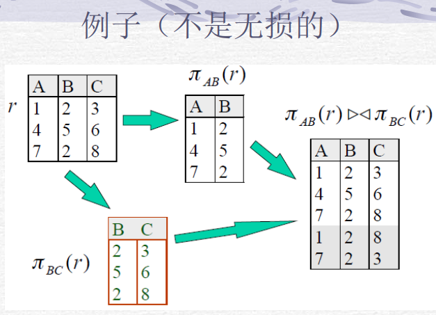
至于分解后是否保持函数依赖，要看F。
也就是F中的每一对依赖X、Y，必须出现在某个子表\(R_i\)中。这样就分解后就保持函数依赖。
BCNF
BCNF是3.5NF，如果一个关系是3.5NF，那么它必定是3NF。
如果一个关系R满足BCNF，那么这张表中就不存在“冗余”。所以BCNF是很棒的。
如果一个关系R不满足BCNF呢？那么就将R分解成若干个子表，使得每个子表都满足BCNF，这样也就不会有冗余了，这样也是很棒的。
所以问题的关键就是如何判断一个表是否满足BCNF？以及如果一个表不满足BCNF，如何将它分解成满足BCNF的子表？
先讲第一个问题，如何判断一个表是否满足BCNF。
假定现在有关系R，函数依赖集F。对于F中每一条关系\(X \rightarrow Y\)，必须满足下面任意一条，则R满足BCNF。
- X是超键
- X包含Y
下面讨论第二个问题，如何将一个不满足BCNF的表分解为满足BCNF的若干子表。
若\(X \rightarrow Y\)不满足2条规则中任意一条，则将R分解为\(R_1 = R - Y\)与\(R_2 = X + Y\)。显然，这是个无损分解（很容易证明，公共部分是X，且X可推出R2）。而且\(R_1, R_2\)也是满足BCNF的。
如果有多个依赖不满足规则呢？那就依次分解即可（注意，不同分解顺序带来的结果并不相同不过都是对的）
综上，在设计自己的数据库时，我们要尽可能的使表都满足BCNF，这样就不会产生数据的冗余。但是BCNF有一个缺点，就是分解后不一定能保持函数的依赖。比如下面这个例子：
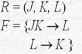
\(L \rightarrow K\)不满足规则，所以将R分解为\(R_1 = (J, L), R_2 = (L, K)\)。函数依赖有两个，第二个在R2中可得到保持，第一个在R1或R2都不能得到保持，所以分解后没能保持函数依赖。
这就是BCNF的一个缺点，所以接下来就要介绍3NF。3NF的优点就是它可以保持函数的依赖，但是它的缺点就是仍然会存在一些冗余。
3NF
跟BCNF一样，3NF还是两个灵魂问题：（1）如何判断关系R是否满足3NF（2）如果R不满足3NF，如何将它分解为若干子表使得它们满足3NF
先来解决第一个问题。
假定现在有关系R，函数依赖集F。对于F中每一条关系\(X \rightarrow Y\)，必须满足下面任意一条，则R满足3NF。
- X是超键
- Y被包含在X里
- Y属于候补码（注意不是超键噢）（所以先要求出候补码）
现在来解决第二个问题。
分为以下几步：
- 求F最小覆盖集\(F_c\)
- 从第一个检查到最后一个，把能用其它依赖推出来的依赖去掉
- 从第一个检查到最后一个，把左右边的变量尽量减少
- 回到第一步，若第一步去不掉则进入第四步
- 对于左边相同的，把右边合并起来
- 将\(F_c\)中每一个依赖拿出来组成新表
- 求候选码
- 看候选码在不在其中一个新表中，不在的话就新加一个表，表的属性就是候选码
综上，3NF的好处就是可以保持函数依赖（而且也是无损分解），缺点就是会存在点冗余。
范式总结（NF）
第三范式前面是用“规则”定义出来的，其实它还有另一种定义。
- 第一范式（1NF）：每个属性都是原子属性，本质上所有关系的都满足第一范式。
- 第二范式（2NF）：在满足第一范式的前提下，满足所有非主属性必须依赖于整个候选码而不能依赖于候选码的部分属性。
- 第三范式（3NF）：在满足第二范式的前提下，满足F中不能有非主属性之间的依赖传递。
数据库存储相关
文件中记录的表示方式
- 定长记录：每个记录的大小是固定的。每个字段（或属性）在记录中分配有固定数量的字节。这种方式简化了记录的定位和访问，因为可以直接计算出任何记录的位置。
- 变长记录：不同记录可能有不同的长度。需要额外的信息来确定记录的确切位置和长度。
文件中记录集合的组织方式
- 堆文件：记录在文件空间中任意放置
- 顺序文件：按一定的顺序在文件中组织记录
- 散列文件：按照散列函数计算值存放相应记录
- 多表簇集文件：不同关系表里的记录存放在同一个文件中
元数据是指一个关系数据库系统需要维护关于关系的数据。元数据存储在称为“数据字典”或“系统目录”的结构中
数据库缓冲区管理器的工作原理
- 大致可以概括为以下几个步骤
- 数据页的加载：当需要读取数据时，首先检查所需的数据页是否已经在缓冲区中。如果是，它就直接从缓冲区读取数据，反之则从硬盘上读取数据页，并将其加载到缓冲区中。
- 缓冲区的替换策略：由于缓冲区的大小是有限的，当缓冲区满时，缓冲区管理器必须决定哪些数据页被保留，哪些被替换。
- 脏页的写回：如果一个数据页在缓冲区中被修改，在它被替换出缓冲区之前，这些更改需要被写回到硬盘上以保持数据的持久性。
- 并发控制：缓冲区管理器还需要处理多个事务或操作同时访问同一数据页的情况。这通常涉及锁定机制或乐观并发控制来保证数据的完整性和一致性。
数据库索引相关
索引分类
- 顺序索引（按照排好的顺序储存搜索码的值，并将每个搜索码与包含该搜索码的记录关联起来。）
- 主索引(聚集索引)
- 辅助索引(非聚集索引)(二级索引)
- B+树索引
- 散列索引（基于将值平均分布到若干桶中，一个值所属的桶由散列函数决定）
- 静态索引：就是普通的桶
- 动态索引：就是用二进制实现的桶
稠密索引就是每条记录都有一个索引指针会指向它，稀疏索引就是只有部分索引会指向它。
注意，稀疏索引必须是主索引，二级索引必须是稠密索引。因为主索引的顺序就是记录排列的顺序，所以主索引可以是稀疏索引。但是二级不行，因为二级的索引顺序不是记录排列的顺序，所以如果二级是稀疏索引的话，就有可能无法查到目标数据。所以二级索引必须是稠密索引，稀疏索引必须是主索引。
稀疏索引的优点是占用空间小，缺点是速度慢，精确率相对较低；稠密索引的优点是查找效率快，方面插入和删除。缺点是占用空间大。
- 顺序索引（按照排好的顺序储存搜索码的值，并将每个搜索码与包含该搜索码的记录关联起来。）
数据库查询有关
- 对于一条SQL语句，先经过语法分析器分析语法是否正确，然后经过翻译器被翻译为关系代数表达式，这个关系代数表达式再经过优化器，得到一个执行计划，最后通过执行引擎被执行。
- 两个表连接操作的几种实现方法：
- 嵌套循环连接：\(O(n^2)\)
- 排序-合并连接：\(O(nlogn + n)\)
- 索引连接：\(O(nlogn)\)
- Hash连接：最好情况下\(O(n)\)
- 优化器要做的事：
- 将关系代数表达式转换为查询树
- 对查询树做变换
- 生成执行计划
- 代数优化就是先做选择操作、再做连接操作。物理优化就是优化器决定是采用全盘扫描还是索引扫描，如果采用索引扫描的话是用顺序索引还是B+树索引还是Hash索引。
数据库事务相关
事务的基本特性(ACID)（以银行转账为例）
- 事务定义：事务是指构成单一逻辑单元的操作集合。
- A：原子性：事务要么就不执行，那么就执行，不会执行到一半退出去。
- C：一致性：事务的执行不会改变所有钱的总和。
- I：隔离性：尽管可能存在多个事务同时并发执行的情况，但系统保证，每个事务都感觉不到中其它事务在并发的执行。
- D：持久性：一旦事务完成，其对数据库的影响就是持久的。
事务状态
活动的：事务执行时的状态
部分提交的：最后一条语句执行后
提交的：成功完成后
失败的：发现不能执行后
中止的：事务回滚并且数据库已恢复到事务开始执行前的状态后
事务状态图：
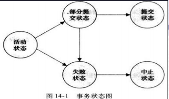
调度
调度分类
- 串行调度：一个事务完成后再去执行下一个事务
- 并行调度：调度中多个事务的指令在时间上相互交叉地进行
- 可串行化调度：这个概念是针对于并行调度的。一个并行调度可能是可串行化调度，也可能不是。如果存在一个串行调度，使得其运行结果等于一个并行调度，则称这个并行调度为可串行化调度。
冲突可串行化
- 冲突操作：如果俩操作属于不同事务，且至少有一个wire操作，且作用于相同数据项，则这俩操作是冲突的。
- 注意，如果一个并行调度是可串行化调度，那么它就是冲突可串行化的。
- 冲突可串行化的判定方法：如果一个并行调度不存在死锁，则可以转换为一个串行调度，也就是这个并行调度是冲突可串行化的。
- 并行调度转换为串行调度的方法：先画出调度优先图，然后其拓扑序就是串行调度。
调度优先图
这个名字起的很烂，我愿意叫它“死锁图”。是一种用来检测事务调度中是否存在死锁的工具。
图中的每一个节点代表一个事务，如果事务A需要等待B释放资源才能进行，则A向B连一条边。如果图中存在环，则存在死锁。
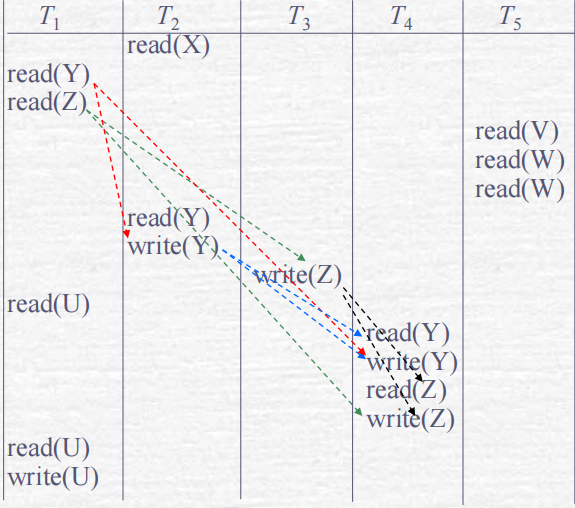
例如这个图，以数据Y举例，对于所有对Y的read/wire操作，若其时间后有其冲突操作，则俩事务之间连一条边。
预防死锁的方法
- wait-die机制：当事务\(T_i\)申请的数据项当前被\(T_j\)持有，仅当\(T_i\)的时间戳小于\(T_j\)的时间戳时，允许\(T_i\)等待。否则\(T_i\)回滚。
- wound-die机制：当事务\(T_i\)申请的数据项当前被\(T_j\)持有，仅当\(T_i\)的时间戳大于\(T_j\)的时间戳时，允许\(T_i\)等待。否则，\(T_j\)回滚。
解决死锁的方法
- 选择一个或多个事务进行回滚，释放它们所占用的资源。通常会选择代价最小的事务进行回滚，代价的衡量标准可能包括事务的执行时间、所占用资源数量、距离完成的远近等。为了改进，可以采用部分回滚，这要求需要更多的额外信息。
可恢复调度 & 无级联调度
- 对于调度中的任意俩事务A, B，如果B read 了A之前 wire 的同个数据，则事务A必须在事务B之前提交。
- 对于调度中的任意俩事务A, B，如果B read 了A之前 wire 的同个数据，则事务A必须在事务B的read操作之前提交。
事务的隔离级别
读未提交：允许事务read未被其它事务提交的更改
读提交：事务只能read已经被提交的更改（数据库的默认隔离级别）
可重复读：确保在事务执行期间，如果事务重新读取之前已读取的数据，则会看到相同的数据。
脏读：一个事务读取了另一个事务尚未提交的数据时。
不可重复读：事务A事先读取了数据，事务B紧接了更新了数据，并提交了事务，而事务A再次读取该数据时，数据已经发 生了改变。因此产生了不可重复读。
幻读：与不可重复读类似，它发生在当一个事务T1读取了一系列符合特定条件的行，然后另一个并发事务T2插入或删除了一些符合T1搜索条件的新行并提交。当T1再次执行相同的查询时，它将“神奇地”看到之前不存在的新行（即“幻行”）。
串行化：调度中事务只能串行运行
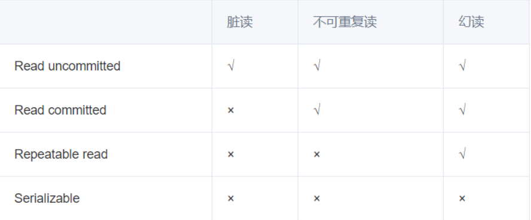
数据库锁相关
为了保证数据的一致性(事务的隔离性)和提高系统的并发处理能力，或者说为了保证应用的有效性，所以引入锁。封锁协议定义了事务如何获取和释放锁的规则。
锁
- 共享锁(S)：当一个事务想要读取数据时，它会在相应的数据项上放置一个共享锁。共享锁的特点是它允许多个读取事务并发地访问同一个数据项，因为读取操作不会互相冲突。所以如果一个事务获得了数据项的共享锁，则它可read但不能wire该数据项。
- 排他锁(X)：当一个数据上了排他锁后，当某事务想要修改或读数据时，它会请求并获得排他锁。只有获得了排他锁，才能对其修改。而且注意，一旦一个数据的排他锁被拿了，那么其它事务就不能获得该数据的排他锁和共享锁，直至其排他锁被归还。
封锁协议
二阶段锁定协议
最常用的就是二阶段锁定协议，即要求每个事务分两个阶段对数据进行锁定和解锁。增长阶段：事务可以获得锁，但不能释放锁。缩减阶段：事务可以释放锁，但不能获得新的锁。
二阶段锁定协议特点：
- 把两个阶段的定义抄一遍
- 可以保证冲突可串行化：多个事务根据封锁点的顺序进行排序即是可串行化顺序。
二阶段锁定协议保证了不会出现脏读的问题。但是不可重复读、死锁、活锁、级联回滚问题仍然可能会出现。另外，虽然两阶段封锁协议保证冲突可串行化，但是冲突可串行化未必符合两阶段封锁。
严格两阶段封锁协议
- 定义：在2PL的基础上，要求事务所持排他锁必须在事务提交后方可释放。这个要求保证了在提交前防止其它事务读这些数据。可以避免出现级联回滚。
强两阶段封锁协议
- 定义：要求事务提交之前不能释放任何锁。
树形协议
- 定义：树形协议是一种数据库并发控制机制，用于管理在树状数据结构（如B树索引）上的锁。它规定了事务在获得和释放锁的顺序，以确保在访问树形数据结构的不同部分时维护一致性和隔离性。事务必须按照从根节点到叶节点的顺序来获取锁，并且在向下遍历树时不能返回到已经释放锁的节点。这种方法避免了死锁的发生，因为它不允许事务在树结构中回溯并重新获取锁。
- 优点：保证了冲突可串行化；不会产生死锁，不需要回滚；可较早地释放锁，以减少事务间的等待时间，从而可增强调度的并发性。
- 缺点：不能保证事务的可恢复性；不能保证不发生级联回滚；可能会给那些根本不访问的数据项加锁，从而增加了锁的开销和额外的等待时间，使并发性降低。
多粒度封锁协议
- 规则：
- 引入意向锁，并规定了与S/X锁的兼容性规则
- 事务必须首先在高级别上获取意向锁，然后才能在低级别上获取实际的共享或排他锁。
- 锁可以在事务的任何时候释放，但一旦释放，事务就不能再在那个级别或更低级别上获取新的锁。
- 特点：
- 事务可以根据需要锁定细粒度（如行）或粗粒度（如整个表）的数据，从而提高了系统的并发性。
- 通过允许在不同粒度上加锁，多粒度封锁减少了锁冲突的可能性，提高了并发访问的效率。
- 规则：
锁转换
- 定义：允许一个事务在其执行过程中改变已经获得的锁的模式。锁转换分为两种情况：升级和降级。
时间戳排序协议
- 是数据库并发控制中使用的一种机制，用于在没有使用锁的情况下管理事务的并发执行。它通过为每个事务分配一个唯一的时间戳来确保数据库的一致性和隔离性。
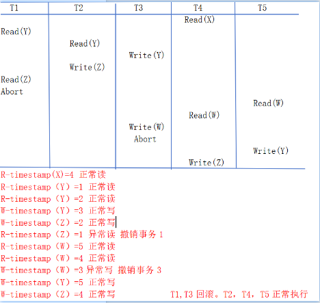
快照隔离
- 是数据库系统中一种并发控制方法，它允许事务看到数据库在某一特定时间点的一致性视图。这意味着即使其他事务对数据库进行了修改，一个在快照隔离级别下运行的事务也会看到它开始时数据库的状态，而不会看到这些修改。
数据库日志相关
故障种类
- 事务故障
- 逻辑错误：如非法输入、找不到数据、溢出或超出资源限制。
- 系统错误：系统进入一种不良状态（如死锁），结果事务无法正常执行。
- 系统崩溃：硬件故障，或者是数据库软件或操作系统的漏洞，导致易失性存储器内容的丢失，并使得事务处理停止。
- 磁盘故障：在数据传送操作过程中由于磁头损坏或故障造成磁盘块上的内容丢失。
- 事务故障
什么是基于日志的恢复机制
- 是DBMS中用来保证数据一致性和完整性的一种技术。这种机制依赖于日志文件，它记录了对数据库所做的所有修改。通过redo和undo操作，使得数据库能够在发生故障后恢复到一个一致的状态，保证了即使在系统崩溃后，也不会丢失已提交的数据，并且不会有未完成事务的残留影响。是实现持久性的关键机制。
事务和日志的关系
- 事务执行依赖于日志来记录和维护操作的历史，而日志则提供了必要的机制来保证事务的完整性和数据库的恢复能力。这种依赖关系是现代数据库系统实现高可靠性和数据一致性的基础。
如何根据日志写出恢复日志（看图片+做题吧，懒得讲了）
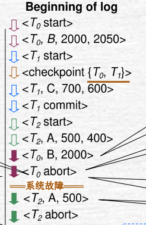
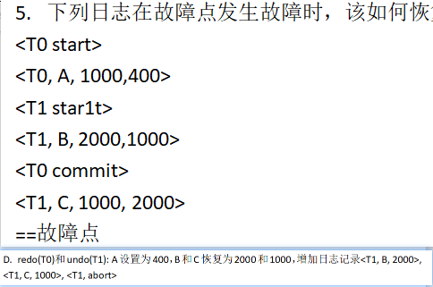
数据库错题相关
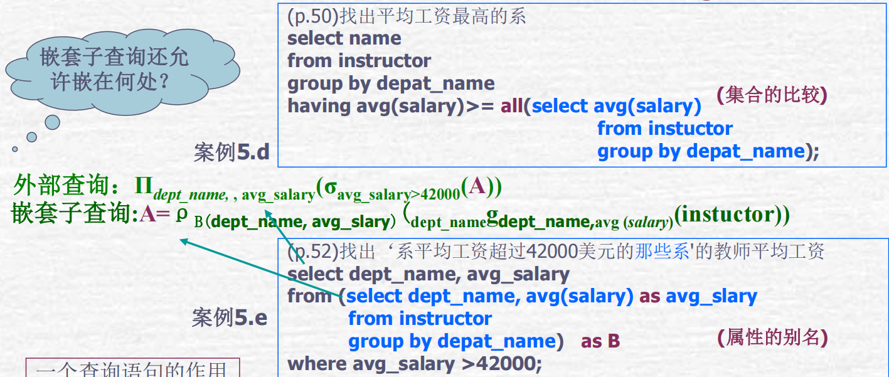
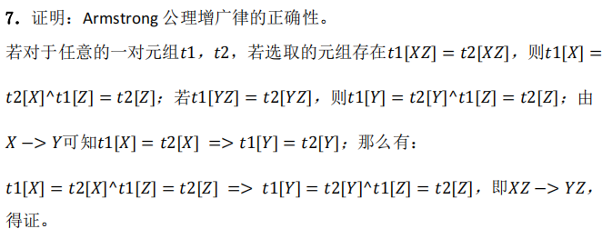
ER图的时候，n对n中间要新开一张表，左右俩表的主键分别为外键，整体作为主键。
写关系代数/SQL的时候如果只是需要ID的话其实很多情况下不用与另一张表自然连接；注意有时候题目会强制让你写笛卡尔积的sql/关系代数；如果写关系代数没思路时，可以试试俩同样的表做自然连接或者group by或者用“-”
3NF时如果被包含记得要删掉
求BCNF的俩例子
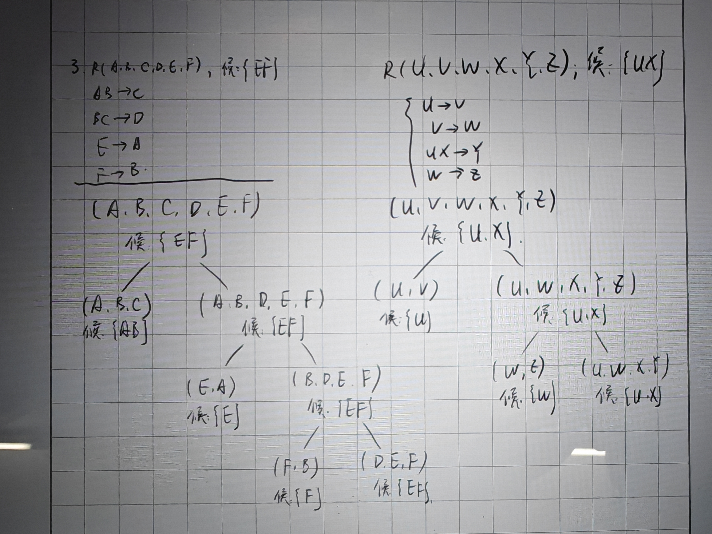